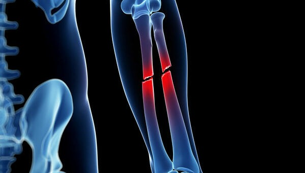

DR. DAVID ARIEL GOMEZ ARMENDARIZ - TRAUMATOLOGIA Y ORTOPEDIA
UNIVERSIDAD AUTONOMA DE NUEVO LEÓN - CIRUGIA DE HOMBRO Y RODILLA
TRAUMATOLOGIA
TRAUMATOLOGIA:Es una rama de la medicina encargada del estudio, tratamiento y prevención de las lesiones del aparato musculo esquelético, estas incluyen los músculos, huesos, ligamentos, tendones y tejidos relacionados. La traumatología es ejercida por los médicos traumatólogos.
Definicion de Traumatologia Dra. Maria de Andrade
TRAUMATOLOGIA
FRACTURA
Una fractura es una rupturageneralmente en un hueso. Si el hueso roto rompe la piel, se denomina fractura abierta o compuesta.
Las fracturas en general ocurren debido a accidentes automovilísticos, caídas o lesiones deportivas. Otras causas son la pérdida de masa ósea y la osteoporosis, que causa debilitamiento de los huesos. El exceso de uso puede provocar fracturas por estrés, que son fisuras muy pequeñas en los huesos.

FRACTURA
HERNIAS DISCALES
Una hernia de disco hace referencia a un problema con uno de los amortiguadores cartilaginosos (discos) que se encuentran entre los huesos individuales (vértebras) que se apilan para formar la espina dorsal.. Una hernia de disco, que puede ocurrir en cualquier parte de la espina dorsal, puede irritar un nervio cercano. Según la ubicación de la hernia de disco, puede provocar dolor, entumecimiento o debilidad en un brazo o una pierna. L4-L5, es uno de los lugares donde podemos presentar hernia discal no siempre causa sintomatología. Algunas veces se descubre en una radiografía que se practicó por otra razón.